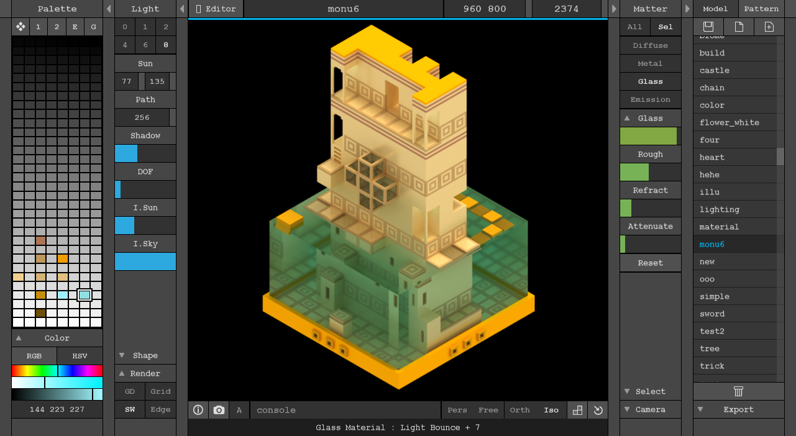
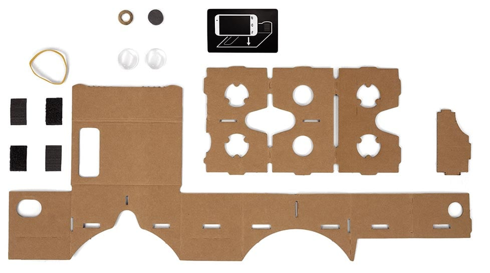

VR is a world that looks real...
but it's generated by a computer
and you can create it!
Let's start from the basics...
do you know these shapes?
These are all "2D" shapes
Hold on, what does 2D mean?
two-dimensional: width and height
they are "flat" shapes
Enter the magic world of
3D means: three-dimensional
width, height AND depth
now the fun bit...
With all these 3D shapes we can create
Our own VIRTUAL WORLD!
WebVR is a technology that makes it possible to experience VR on your computers and phones
well actually, your mums' and dads' phones :)
let's see how it looks
we can do something more complex
we can use tools to create our worlds (a bit like minecraft)
and we can add interactions (a lot like minecraft!)
how do we enter these virtual worlds?
we can trick our mind that depth is real by using...
Stereoscopy!
Most stereoscopic methods present two offset images separately to the left and right eye of the viewer.
These two-dimensional images are then combined in the brain to give the perception of 3D depth.
to make stereoscopy
on our phones
we can use
a piece of carboard
and 2 lenses
you can make your own
or buy them already made